01ภาพรวม
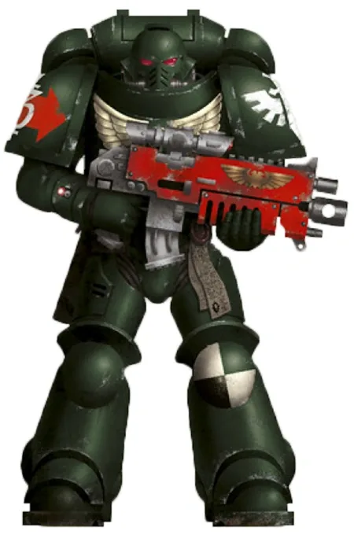
Legion ที่หนึ่ง ผู้ภักดีแต่ซ่อนความลับอันน่าอับอายมาหมื่นปี — และตอนนี้ Primarch ของพวกเขากลับมาแล้ว
02ต้นกำเนิด
Legion ที่ 1 ภายใต้ Lion El'Jonson จากป่าแห่ง Caliban หลัง Heresy ส่วนหนึ่งของ Legion ภายใต้ Luther ทรยศ Caliban แหลกสลาย ผู้ทรยศเหล่านั้น (Fallen Angels) ถูกพายุ Warp พัดกระจายไปทั่วกาแล็กซี
03เนื้อเรื่องเจาะลึก
อัศวินแห่ง Caliban
Lion El'Jonson ตกลงในป่าอันตรายของดาว Caliban โตมาแบบเด็กป่า จนอัศวินชื่อ Luther พบและนำเขาเข้า Order อัศวิน ทั้งสองร่วมกันกำจัดสัตว์ร้ายจนหมดดาว เมื่อจักรพรรดิมาถึง Lion นำ Legion ที่ 1 ส่วน Luther ถูกส่งกลับ Caliban เพื่อดูแลการสรรหาทหาร — ความขมขื่นนี้กลายเป็นการทรยศในเวลาต่อมา
การล่มสลายของ Caliban
เมื่อ Lion กลับบ้านหลัง Heresy เขาพบว่า Luther และทหารบน Caliban หันไปหา Chaos แล้ว การต่อสู้ระหว่างสองคนและการยิงถล่มจากวงโคจรทำให้ดาว Caliban แตกสลาย เหลือเพียงป้อมปราการ The Rock ที่กลายเป็นบ้านของ Chapter Lion หายไป Luther ถูกขังไว้ใต้ The Rock และอ้างว่า Lion จะกลับมา
The Unforgiven
Dark Angels และ Chapter ลูกหลานเรียกตัวเองว่า "The Unforgiven" (ผู้ที่ไม่ได้รับการให้อภัย) พวกเขาเชื่อว่าต้องจับ Fallen ทุกคนให้สำนึกผิดก่อนตายจึงจะชดใช้บาปได้ ความลับนี้ทำให้บางครั้งพวกเขาถอนตัวจากสงครามกลางคันเพื่อไล่ล่า Fallen สร้างความสงสัยให้พันธมิตร
04ยุค 30K — ในยุค Great Crusade และ Horus Heresy
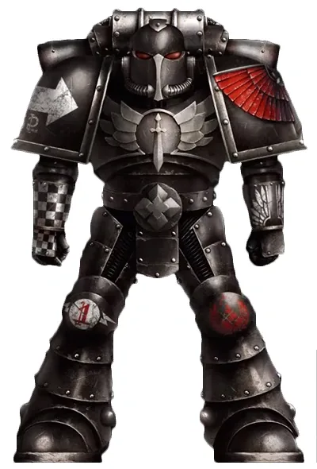
ยุค 30K ใส่เกราะสีดำ ครอบครองอาวุธลับที่สุดของจักรพรรดิ แบ่งเป็นกลุ่มผู้เชี่ยวชาญ 6 สาย และภักดีตลอด Heresy แต่ความขัดแย้งภายในระหว่างทหารจาก Terra กับชาว Caliban ปูทางสู่การทรยศของ Luther
ดูภาพรวมยุค 30K ทั้งหมดที่ เนื้อเรื่องยุค 30K และความต่างของสองยุคที่ เปรียบเทียบ 30K vs 40K
05นิสัยและวัฒนธรรม
- เรียกตัวเองและ Chapter ทายาทว่า The Unforgiven (ผู้ไม่ได้รับการให้อภัย)
- ปกปิดเรื่อง Fallen แม้แต่จากพวกเดียวกัน — ทหารระดับล่างไม่รู้ความจริง ต้องผ่านวงชั้นความลับทีละขั้น
- จับ Fallen มาสอบสวนให้ 'สารภาพ' ก่อนประหาร และจะร่วมมือกับฝ่ายอื่นเพียงเพื่อตามล่าพวกเขา
06จุดที่น่าสนใจ
- Deathwing: หน่วย Terminator ชุดสีกระดูก
- Ravenwing: หน่วยมอเตอร์ไซค์และยานเร็วสีดำ
- ป้อม The Rock คือชิ้นส่วนที่เหลือของดาว Caliban
07ความสามารถพิเศษ
สิ่งที่ทำให้ Dark Angels แตกต่างจากทัพอื่น — ทั้งพลังที่ติดตัวมาทั้งเผ่า/ทัพ และความสามารถของบุคคลสำคัญ
ของทั้งเผ่า/ทัพ
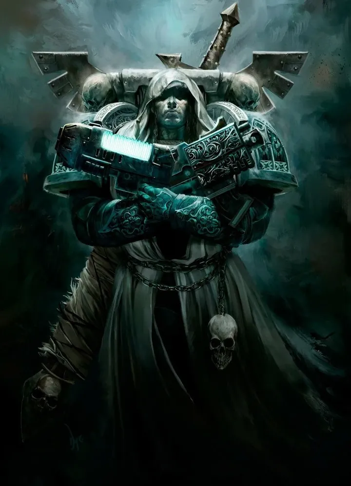
ความลับของ The Fallen
เมื่อหมื่นปีก่อน ครึ่งหนึ่งของ Legion บนดาว Caliban นำโดย Luther ทรยศต่อ Lion El'Jonson ผู้ทรยศเหล่านี้ (The Fallen) ถูกดูดเข้า Warp และกระจายไปทั่วเวลาและอวกาศ Dark Angels ตามล่าพวกเขาอย่างลับ ๆ เพื่อปกปิดความอัปยศ — ความลับนี้ถูกเก็บเป็นชั้น ๆ มีเพียง Inner Circle ที่รู้ทั้งหมด
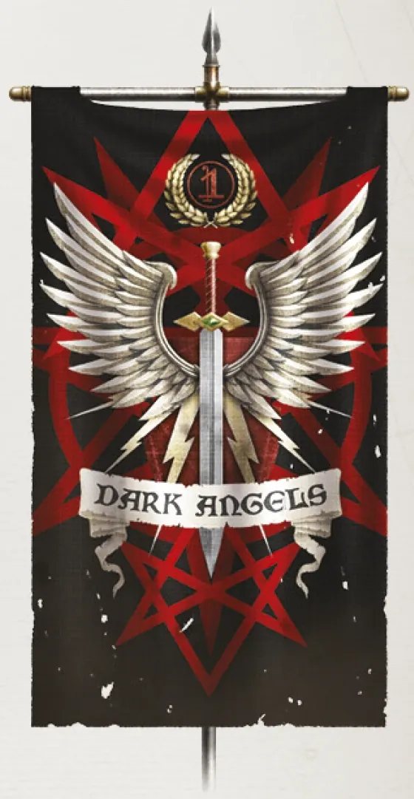
Deathwing — กองร้อย Terminator ทั้งกอง
ต่างจาก Chapter อื่น กองร้อยที่ 1 ของ Dark Angels ใช้ชุด Terminator ทั้งหมด ทาสีกระดูก ตั้งแต่ยุค 30K พวกเขาคือหน่วยจู่โจมที่ทำลายเป้าหมายที่หนักที่สุด
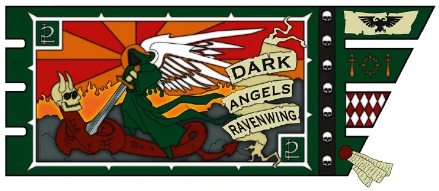
Ravenwing — นักล่าความเร็วสูง
กองร้อยที่ 2 ใช้มอเตอร์ไซค์ Land Speeder และเครื่องบินทั้งหมด มีหน้าที่ไล่ตาม Fallen ที่ถูกพบและจับตัวกลับมา "สอบสวน"
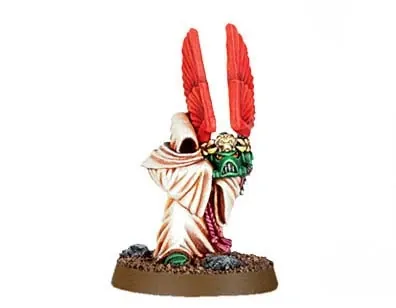
Watchers in the Dark
สิ่งมีชีวิตตัวเล็กสวมผ้าคลุมจากป่าบน Caliban ไม่มีใครรู้ว่ามันคืออะไร มันไม่พูด ทำงานให้ Dark Angels อย่างเงียบ ๆ และมีพลังต้านพลังจิต — บางทฤษฎีเชื่อว่าเกี่ยวข้องกับ Lion เอง
ของบุคคลสำคัญ
Lion El'Jonson
Primarch ที่กลับมาหลับใหลหมื่นปีใน The Rock แล้วตื่นขึ้นในยุคปัจจุบัน เดินทางผ่านเส้นทางลึกลับในป่าที่เชื่อมโยงกับ Caliban (ที่เรียกกันว่า "The Forest") ปรากฏตัวช่วยจักรวรรดิที่ไม่มีใครคาด ถือดาบ Fealty

Azrael
Supreme Grand Masterผู้นำ Chapter ผู้รู้ความลับทั้งหมด ถือ Sword of Secrets ดาบที่รวมดาบของ Grand Master ทั้งหมด หมวก Lion Helm มี Watcher in the Dark ถือไว้ให้และสร้างโล่ป้องกัน

Ezekiel
Grand Master of Librariansถือ Book of Salvation ที่บันทึกชื่อ Fallen ที่ถูกจับได้ด้วยเลือดของพวกเขาเอง มีพลังอ่านใจและตาทิพย์ (Bionic eye)

Cypher
Fallen ที่ไม่มีใครจับได้ผู้นำลึกลับของ Fallen ที่ปรากฏตัวในสงครามสำคัญเสมอ ถือปืนพกพลาสมาและ Bolt Pistol ดูเหมือนจะฆ่าไม่ตาย เชื่อกันว่ากำลังเดินทางไปยัง Terra เพื่อพบจักรพรรดิ
08หน่วยและบทบาทในกองทัพ
Dark Angels ปกปิดความลับเรื่อง "The Fallen" (พี่น้องที่ทรยศเมื่อหมื่นปีก่อน) จึงจัดโครงสร้างกองร้อยแตกต่างจาก Codex และมีตำแหน่งที่รู้ความลับเป็นชั้น ๆ
Supreme Grand Master
สุพรีม แกรนด์ มาสเตอร์ผู้นำสูงสุดของ Dark Angels (ปัจจุบันคือ Azrael) ผู้รู้ความลับทั้งหมดของ Chapter และสวมหมวก Lion Helm ที่มี Watcher in the Dark ถือไว้ให้
Deathwing
เดธวิงกองร้อยที่ 1 ทั้งกองร้อยใช้เกราะ Terminator สีกระดูก สมาชิกได้รู้ความลับบางส่วนเรื่อง Fallen และรับภารกิจตามล่าผู้ทรยศ
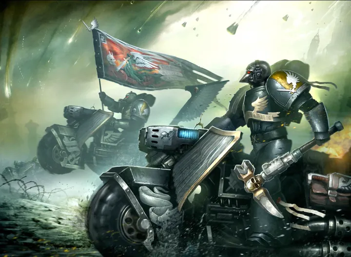
Ravenwing
เรเวนวิงกองร้อยที่ 2 เป็นหน่วยเร็วทั้งหมด — มอเตอร์ไซค์ Land Speeder และเครื่องบิน Dark Talon ทำหน้าที่ไล่ล่า Fallen ที่หนีไป
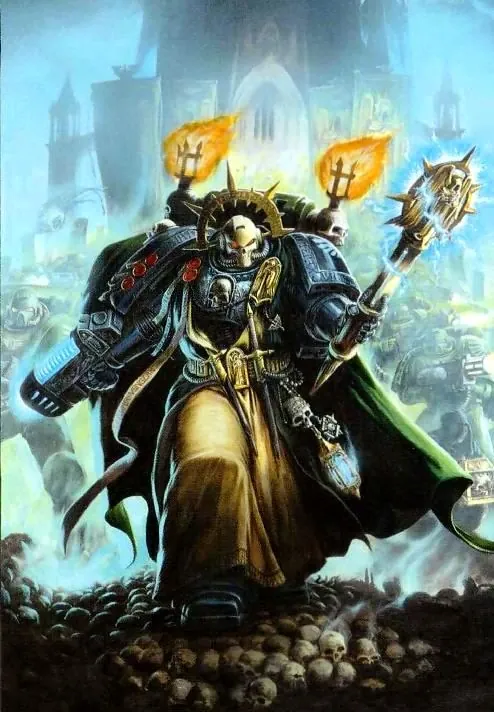
Interrogator-Chaplain
อินเตอร์โรเกเตอร์-แชปเลนChaplain ระดับสูงที่มีหน้าที่ "สอบสวน" Fallen ที่จับมาได้ในคุกใต้ The Rock เพื่อให้สำนึกผิดก่อนตาย — คำสารภาพคือทางเดียวสู่การไถ่บาป
Watchers in the Dark
วอทเชอร์ อิน เดอะ ดาร์กสิ่งมีชีวิตตัวเล็กสวมผ้าคลุมจากป่าบนดาว Caliban ไม่มีใครรู้ว่าคืออะไร รับใช้ Dark Angels อย่างเงียบ ๆ และสามารถต้านพลังจิตได้
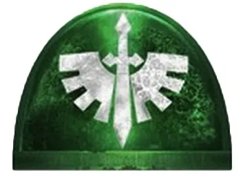
Inner Circle
อินเนอร์เซอร์เคิลสภาลับของผู้นำระดับสูงซึ่งเป็นกลุ่มเดียวที่รู้ความจริงทั้งหมดเรื่อง Fallen และเรื่อง Luther ที่ถูกขังอยู่ใต้ The Rock
ตำแหน่งมาตรฐานของ Space Marine (Captain, Apothecary, Techmarine ฯลฯ) ดูได้ที่ หน่วยและบทบาทของ Space Marines และกฎการจัดองค์กรที่ Codex Astartes
09วีรกรรมและเหตุการณ์สำคัญ
Fall of Caliban
ดาวบ้านเกิดแตกสลายระหว่างการดวลของ Lion กับ Luther
ล่า Cypher
ไล่ล่า Fallen ลึกลับชื่อ Cypher มาหลายพันปี
Luther หลบหนี
ปีศาจบุก The Rock และปล่อย Luther ที่ถูกขังไว้หมื่นปี
10ตัวละครสำคัญ
Azrael
Supreme Grand Masterผู้นำคนปัจจุบัน หนึ่งในไม่กี่คนที่รู้ความลับทั้งหมด
Lion El'Jonson
Primarchตื่นขึ้นแล้วในยุค Era Indomitus
11ยุค 40K — สหัสวรรษที่ 41
ยุค 40K Dark Angels และ Chapter ทายาทยังคงทำสงครามลับตามล่า Fallen ซึ่งบางคนหันไปรับใช้ Chaos บางคนกลับใจ และบางคนยังจงรักภักดีในแบบของตัวเอง
12เนื้อเรื่องล่าสุด (Era Indomitus / M42)
หลังการเกิด Great Rift ปีศาจบุก The Rock และทำให้ Luther หลบหนี เหล่า Unforgiven สูญเสียหนักในการสังหารหมู่ที่ Darkmor ต่อมา Lion El'Jonson ตื่นขึ้นระหว่างเหตุการณ์ Arks of Omen และเริ่มปกป้องดาวต่าง ๆ ใน Imperium Nihilus
หลังการเกิด Great Rift ปฏิทินของจักรวรรดิคลาดเคลื่อน เหตุการณ์ยุคปัจจุบันจึงมักระบุเพียง 'M42' ไม่มีปีที่แน่นอน
13แกลเลอรี
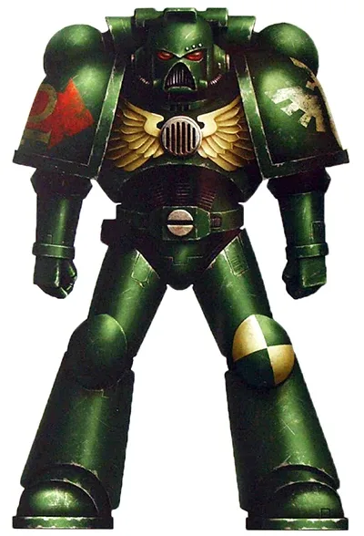
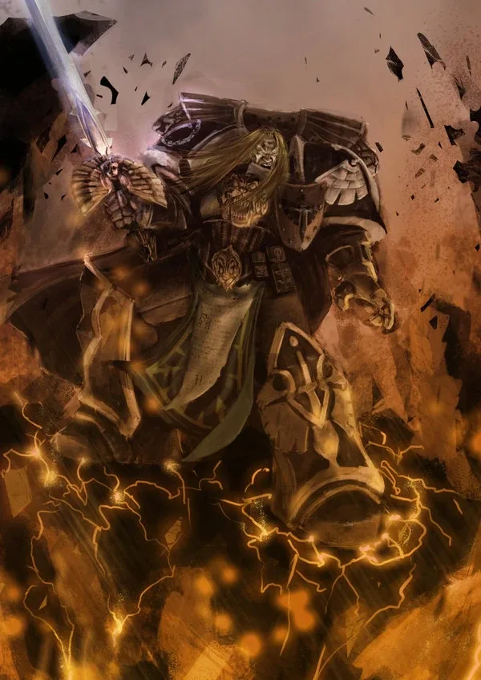
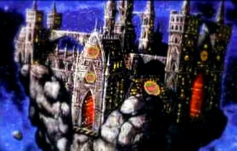